SIGNS of a cracked bone around the tooth’s roots:
• When you move one tooth, the tooth beside it also moves.
• When you move the loose tooth, the bone moves with it.
• Blood is coming from under the gums.
TREATMENT:
When a bone is broken or cracked, the treatment is to hold the broken parts together so that the parts can rejoin. The usual way to do this is to put wires around the teeth. An experienced dental worker should do this. There are two things you can do. First, provide emergency care. Later, show the person how to eat and how to keep his mouth clean.
Emergency care (pages 109–110):
1. Be sure the person can breathe.
2. Stop the bleeding.
3. Put a bandage on the person’s head.
4. Give penicillin to stop infection.
5. Give aspirin or acetominophen for pain.
1. Be sure the person can breathe.
Lie him on his side so that his tongue and jaw fall forward.
Later, carry him to the hospital in that position. If he goes in a car, be sure he sits with his head forward. His jaw and tongue will be forward and he will breathe more easily.
Look inside the mouth to see if any tooth is broken and very loose. A broken piece of tooth can fall out and block the person’s airway, so take out the broken part now. You can leave in the root, but if you do, tell the dental workers at the hospital (p. 213). They will remove the root when they put on the final wires.
2. Stop the bleeding.
Wipe away the dried blood from his face and from inside his mouth. Look for the place that is bleeding. Sew any deep cuts on his face (see Where
There Is No Doctor, p. 86). If you gently press cotton gauze against the bleeding gums, it will usually control the bleeding.
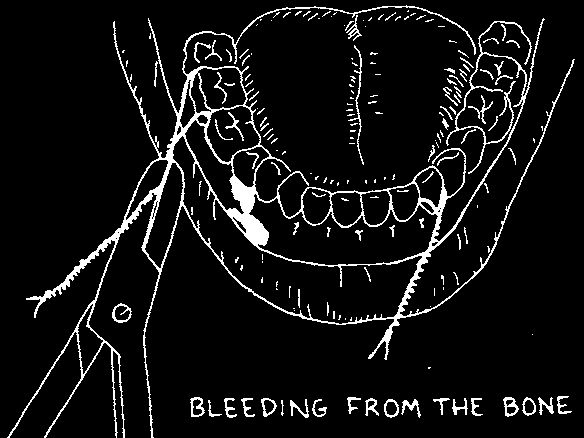
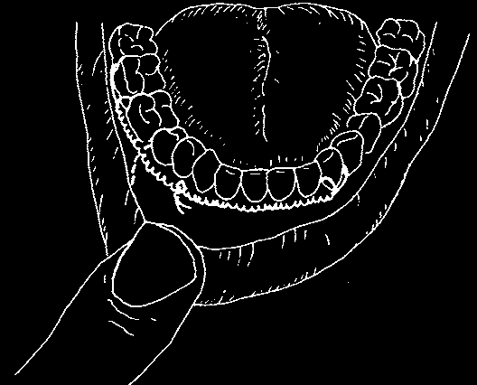
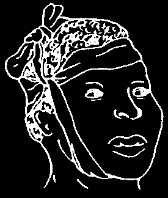
Bleeding inside the mouth, from between the broken parts of the bone, is more difficult to stop. You must pull the two sides together and hold them in that position. To do this, you need wire that is thin, strong, and bends easily. 'Ligature wire’ (0.20 gauge) is best.
Place a piece of wire around 2 teeth, one on each side of the break. Choose the strongest tooth on each side—the ones with the longest or the most roots.
Tighten the wire around the two strong teeth with pliers or a hemostat.
Ask the person to close his teeth. Lift up the broken part of the jaw and hold it so the lower teeth meet the upper teeth properly. This is the normal way the jawbone holds the teeth.
Now join the wires. Twist and tighten them together. This may be painful.
You can inject local anesthetic—see
Chapter 8. You must twist the wire tight enough to hold the broken parts together.
Bend the end of the twisted wire toward the teeth. Now it cannot poke the person’s lips or cheek.
3. Put on a head bandage.
Gently close the person’s jaw so that his teeth come together. Support it in this position with a head-and-chin bandage.
Tie the bandage to support the jaw, not to pull it.
Do not make it too tight. It is all right if his mouth stays partly open with the teeth slightly apart.
Be sure not to let the bandage choke the person.
4. Give penicillin by injection (page 204) for 5 days to stop infection inside the bone.
5. Give something for pain. Aspirin (page 94) may be enough. Give
600 mg by mouth, 4 to 6 times a day, as needed. For children, see doses on page 165. If there is a lot of pain and the person cannot sleep, give codeine. The dose for an adult is 30 mg, 4 to 6 times a day as needed.


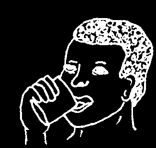

Send the person to the hospital as soon as possible. The person must have wires placed on his teeth within a week of the accident. The wires must remain there for 4 to 6 weeks. Every week, the person must return to the hospital to have the wires tightened. During this time he cannot open his mouth to chew food or brush his teeth.
CARING fOR A PERSON WHO CANNOT EAT PROPERLY
1. Give Iiquid foods for strength and energy.
Prepare food in two ways: (a) First, a milk-oil drink to build strength and then (b) a special soup to keep him strong and give him energy.
To build strength: Milk-oil drink
Mix for him each day at your clinic:
• 9 cups of water
• 150 ml of peanut oil or coconut milk
• 3 cups of milk powder
• ½ cup of honey or 1 cup of sugar
Leave some near his bed, and keep the rest in a cool place.
To keep strength and give energy: Special vegetable soup
Cut into small pieces and cook together in a pot of water:
• ½ tin of fish or a handful of dried fish
• 4 small spoonfuls of peanut oil or palm oil
• 6 sweet potatoes or small yams
• 1 large handful of green leaves
• 1 small spoonful of salt
Pour the soup into an empty tin with small holes made in the bottom.
Use the back of a spoon to press as much of the cooked food as you can through the holes. The person can suck the soup between the teeth to the throat and then swallow it. Clean the tin and set it in boiling water, so you can use it again the next day.
2. Keep the teeth clean and the gums tough.
The person must learn to clean teeth and gums or the gums can quickly become infected and the mouth will feel sore. So:
• Scrub both the wires and the teeth with a soft brush after drinking soup.
• Rinse with warm salt water (page 7), 2 cups every day.
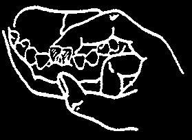

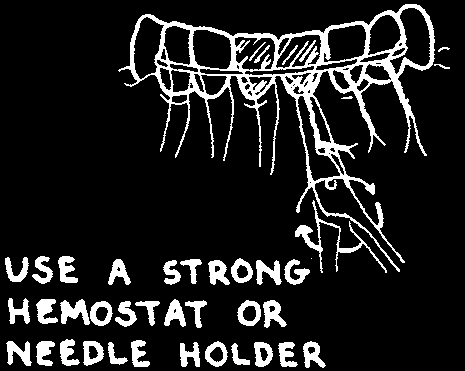

LOOSE TEETH
If the bone around the roots of the teeth is cracked, those teeth will be loose. Do not take the teeth out until the bone is healed. Otherwise, bone will come out with the teeth and there will be a big hole in the jaw.
Instead, support the teeth, in order to hold both sides of the bone steady.
1. With your thumb and finger, gently move the loose teeth and bone back into normal position.
2. Cut a hypodermic needle and use it as a splint. Make it long enough to fit around two strong teeth on each side of the loose teeth. Curve the needle so it fits the curve of the teeth. To make the sharp ends smooth, use a file or rub the ends against a stone.
3. Tie each tooth to the needle. Use short pieces of 0.20 gauge ligature wire (page 110).
Put one end of the wire under the needle.
Bring it around the back of one tooth and out to the front again over the needle.
Use the end of a small instrument to hold down the wire at the back of the teeth. Then twist the ends together.
Tighten the wire around each one of the 6 teeth.
4. Cut the ends of the ligature wire. Turn them toward the teeth, so they will not cut the lip.
5. Tighten the wires the next day, and then once each week. But be careful. Only ½ a turn usually is needed. More, and the wire will break.
Always twist in the direction a clock moves. With this habit, you will remember which way tightens the wire and which way loosens it.
6. Explain to the person that it takes 4 weeks for the bone to heal. The wires must remain on the teeth for this time. To help the teeth to heal, ask the person to:
• give these teeth a rest. Use other teeth for chewing.
• clean both the teeth and the wires with a soft brush.
• rinse with warm salt water, 2 cups every day (page 8).
• return to have the wires tightened every week.
7. After 4 weeks, cut and remove the wires. Ask the person to watch those teeth. A dark tooth and gum bubble are signs that the tooth is dying. Take it out, unless you can give special nerve treatment.
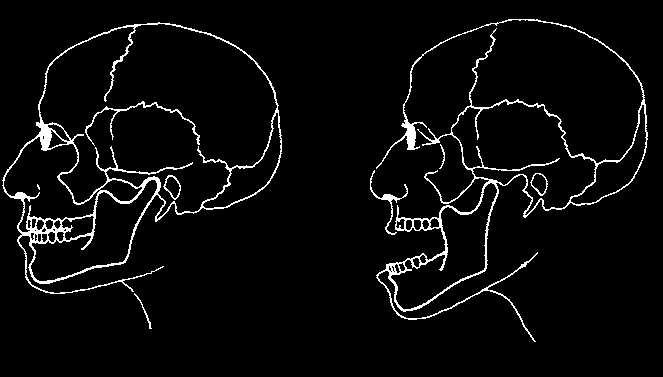

DISLOCATED JAW
If a person opens her mouth wide and then is unable to close it, we say her jaw is dislocated. It is stuck in the open position. This problem often happens to a person who does not have several of her back teeth. When she opens wide to yawn or shout, the part of her jaw that joins her head moves too far forward inside the joint. It is then unable to return to its normal position. You can also dislocate the lower jaw by accident while extracting a tooth.
SIGNS:
• She is unable to close her teeth together.
• She cannot close her lips easily.
• Her lower jaw looks long and pointed.
• It hurts when you press on the joint in front of her ear.
NORMAL
DISLOCATED
• She cannot speak clearly.
TREATMENT:
The treatment is to try to move the lower jaw back where it belongs. Then hold it in that position until the muscles can relax.
1. Find a way to support the person’s head. For example, have the person sit on the floor with her head against a wall.
2. Kneel in front of her. Put your fingers under her jaw, outside the mouth. Put your thumbs beside her last molar tooth on each side. Do not put your thumbs on the molars. The person may bite them!
Press down hard with the ends of your thumbs. Force the jaw to move quickly down and back into position. Be sure to press down before you press back.
If the jaw will not move, perhaps the muscles are too tight. A doctor or dentist can put the person to sleep, which will relax the muscles.
3. Support the jaw with a head–and–chin bandage for 3 to 4 days (page 110).
4. Give aspirin or acetominophen for pain (page 94).
5. Explain the problem to the person and tell her how to care for her jaw: (a) eat mostly soft foods for 2 weeks; (b) hold a warm wet cloth against the jaw; (c) remember not to open the mouth wide anymore. If possible, replace the missing back teeth with dentures (page 107).

PAIN IN THE JOINT
A joint is the place where one bone joins another. The jawbone has two joints, for it joins the head in front of each ear.
The mouth opens and closes because:
• muscles pull the jawbone; and
• the jawbone slides against the head bone, inside the joints.
Pain in these joints may be because:
(1) The muscles are tight because the the person is tense or nervous.
(2) The jawbone is fractured in the area of the joint. (Also check the lower jaw on the other side since a fracture near the joint is often caused by a blow to the other side of the face.)
(3) The teeth do not fit together properly.
TREATMENT:
Before you treat, decide what is causing the pain. We will discuss the three causes mentioned above.
1. Tension.
Talk with the person and help, if you can, to find a solution to her personal problems. This can do much to help her and her muscles relax.
In addition, explain how to care for the sore joint:
(a) Eat only soft foods until it no longer hurts to chew.
(b) Hold a hot, wet cloth against the jaw, to help relax the muscle.
Do this as often as possible, but be careful not to burn the skin.
(c) Take aspirin or acetominophen (page 94) to reduce the pain.
2. Fracture.
If an X-ray shows a fracture, the person needs expert help. A dentist can wire the teeth in a way that will allow the bone to heal.
3. Teeth do not fit together properly.
Imagine a line that passes between the 2 middle upper teeth and the
2 middle lower teeth in the person’s closed mouth (see the next page).
When the person opens the mouth, this line becomes longer, but it is still a straight line. If it is not, this condition can, after a long time, cause pain in the joint.


These teeth are normal. The line formed between the two middle teeth does not shift when the mouth opens.
When you see teeth that do not fit properly:
• Warn the person not to open his mouth wide. Suggest, for example, that he take his food in small bites.
• Tell the person what can be done to help. Often a dentist can grind the teeth in a special way and this can end the pain.
These teeth do not fit properly. Because the line shifts, this means the jaw is also shifting.
This shift can cause pain in the joint.
SWOLLEN GUMS AND EPILEPSY
Many persons who suffer from epilepsy
(see Where There ls No Doctor, page
178) have a problem with swollen gums. In severe cases, the gums are so swollen that they cover the teeth. This problem is caused not by epilepsy but by diphenylhydantoin (Dilantin), a drug used to control epilepsy.
When you see swollen gums, find out what medicines the person is taking.
If possible, change to a different drug. If the person must continue using diphenylhydantoin, explain how to prevent this swelling of the gums. Show the person this book, especially pages 69 to 72. Persons who take this drug may be able to prevent the swelling by brushing the teeth carefully after each meal, and taking special care to clean between the teeth (page 71).

BLOOD IN THE MOUTH
Use wet cotton gauze to wipe away the old blood from inside the mouth.
Then you can see where it is coming from. Treat the cause of the bleeding.
IF YOU SEE:
TO STOP THE BLEEDING:
SEE PAGE
a large red clot growing
1. Remove the clot with out of a socket where you cotton tweezers.
have taken out a tooth
2. Ask the person to bite on a piece of cotton.
sore and bleeding gums
1. Rinse with a mixture of and the mouth smells hydrogen peroxide and water.
bad (Vincent’s infection)
2. Remove as much tartar as you can.
a red, bleeding growth
Take out the tooth;
inside the cavity in a tooth it has an abscess.
a loose tooth with
Hold the tooth with wires, or if the bleeding gums around it root is broken, take out the tooth.
torn gums with broken
1. With wire, hold the broken bone and bleeding parts of the bone together.
2. Send the person to an experienced dental worker.
PROBLEMS AFTER YOU TAKE OUT A TOOTH
Problems such as swelling, severe pain, and bleeding can occur after you take out a tooth. Tetanus (page 118), a more serious problem, can also occur, especially if your instruments were not clean.
Swelling of the Face
You can expect some swelling after you take out a tooth. But if the swelling continues to grow, and it is painful, this is not normal. Probably an infection has started. The treatment is the same as for a tooth abscess:
penicillin for 5 days to fight infection, heat to reduce the swelling, and aspirin or acetominophen for pain.
See page 94 for the proper doses.
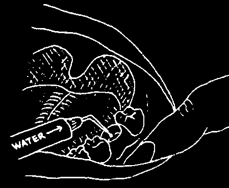


Pain from the Socket
There is always some pain after a tooth is taken out. Aspirin is usually enough to help.
However, sometimes a severe kind of pain starts inside the tooth’s 'socket’
(the wound) 2 to 3 days after you take out the tooth. This problem is called dry socket and it needs special care.
TREATMENT:
1. Place a dressing inside the socket. Change it each day until the pain stops.
First, clean out the socket.
Squirt warm water inside the socket with a clean syringe. After the person spits out the water, squirt water inside once more.
Use a blunt needle so that it does not hurt the gums or bone if it touches them.
Third, place the dressing gently inside the socket.
Place one piece of dressing
Second, prepare the dressing.
into each root space. Push
Soak 1 to 2 small pieces it down into the root space of cotton in eugenol (oil of gently.
cloves.)
Cover the socket with plain
Squeeze each piece so that it cotton gauze, and send is damp but not wet.
the person home bitting
Note: There may be local against it. He can remove medicine in your area that the plain cotton in an hour.
relieves pain. Use it instead of
The dressing should remain eugenol.
inside the socket.
2. Give aspirin or acetominophen for pain (page 94).


Bleeding from the Socket
When you take out a tooth it leaves a wound, so you can expect some blood. However, if the person bites firmly against a piece of cotton, it usually controls the bleeding. To help the wound heal (from a clot), tell the person not to smoke, rinse with salt water, or spit for 1 or 2 days after you take out the tooth.
When the first bleeding occurs, put a new piece of cotton on top of the wound and ask the person to close her teeth against it for an hour. Keep her there with you, to be sure she continues to bite on the cotton. (If it is too painful, you may want to inject anesthetic. See Chapter 9.) Change the cotton if it becomes soaked with blood.
TREATMENT (if the bleeding continues):
1. Take her blood pressure (see Where
There Is No Doctor, pages 410-411). If it is high, you may need medicine to bring it down. That can help slow the bleeding.
2. Look carefully at the wound.
If the gum is torn or loose, put in a suture (pages 161–163).
3. Wrap tea leaves in cotton gauze. Soak the bundle in water and then put it on the socket. Have the person bite against it. Or, have her bite against cotton gauze soaked with cactus juice.
Let the person go home only when the bleeding stops. Give her some clean cotton to use in case the bleeding starts again later
(see page 161).
TETANUS
This is a very serious infection. Tetanus germs enter the body when a wound, like a wound on the bottom of the foot, gets dirty. Germs can also be carried to the socket when you use a dirty instrument to take out a tooth.
To avoid this, carefully read pages 86 to 89.
SIGNS:
• the jaw becomes stiff and tight not
• it is hard to swallow cleaning
• the whole body becomes tight, properly with sudden spasms
TREATMENT:
A person with signs of tetanus requires immediate medical help. See
Where There is No Doctor, pages 182 to 184, if you cannot get help immediately.
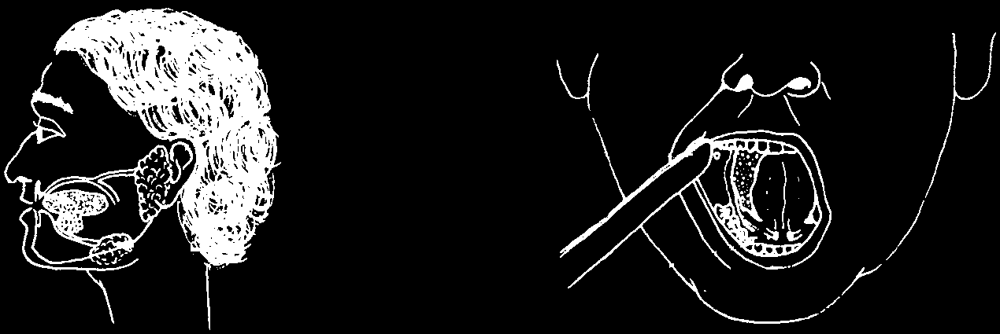
INFECTION INSIDE THE SPIT (SALIVA) GLAND
Spit glands are places where the spit or saliva is made. They are located in front of the ear and under the jaw, on each side of the head. If there is an infection inside a spit gland, the face will become swollen and the area will hurt.
Spit is sent from the gland to the mouth through a thin pipe called a duct.
Ducts open into the mouth in two places: on the inside of each cheek and under the tongue.
A small stone can often block a duct and cause an infection in the spit gland and swelling of the face. You may be able to feel the stone near where the duct enters the mouth.
SIGNS:
• swelling in the area of the spit gland.
• pain which gets worse when the person is hungry, and when he sees or smells food.
• the opening of the duct is red, swollen, and hurts when you touch it.
spit from this gland enters on the inside of
TONGUE
the cheek spit from this gland enters under the tongue
TREATMENT:
Reduce the infection and swelling first. Later try to remove the stone.
1. Give penicillin for 5 days (page 94). If the swelling is large and the infection serious, start with short-acting crystalline penicillin (see page 204).
2. Give aspirin or acetominophen for pain (see page 94).
3. Apply a wet hot cloth to the swelling as often as possible.
4. Give enough soft food to prevent the person from feeling hungry.
The pain will be less then.
5. When the person feels better, a dentist or doctor can remove the stone that is blocking the duct.


SORES ON THE FACE
Whenever you see a sore on a person’s cheek or under his chin, remember there may be a tooth or gum problem. If it is a gum problem, it may be
Noma. See the following pages.
A bad tooth:
Ask him to open his mouth.
Look for an infected tooth in the area of the sore.There may be a large cavity and the tooth may be loose.
Or the tooth may be darker in color than the others.
This is because it is dead.
The pus is draining onto the skin, so the pressure is reduced and the person does not complain of pain.
TREATMENT:
1. Take out the tooth (see Chapter 11).
2. Give penicillin for 7 days (see page 94).
3. After the penicillin treatment, check the sore. If it has healed, there is no longer infection inside. The treatment is finished.
But if the sore is still open and you can squeeze out pus, you will need the help of experienced health workers who can:
• test the pus to see if it is resistant to penicillin. The person may need to take a different antibiotic.
• take an X-ray to see if there are dead pieces of bone which are keeping the infection alive. If there are, they must be removed.
If infected gums (and not a bad tooth) are the cause of a sore on the cheek or chin, the problem is more serious. See the next 4 pages.
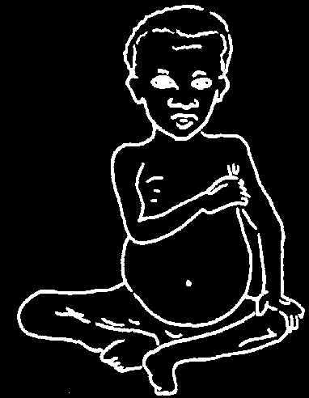

NOMA
When a child is sick, a simple gum infection can get out of control and spread through the cheek to the face. When that happens the condition is called Noma or Cancrum Oris. Noma is a complication of Vincent’s
Infection of the gums (page 102).
You will usully see Noma in children. It will only develop if these 3 things are true:
(1) The child’s general resistance is low.
Usually, he is undernourished and anemic
(lacks iron). He may have tuberculosis.
(2) The child has Vincent’s Infection.
(3) The child has recently had a serious illness such as measles or malaria.
Noma can also be a problem for adults living with HIV. See page 185.
SIGNS:
The infection starts in the mouth.
Then it passes to the gums.
1. Sore mouth with itching gums.
2. Swollen, sore gums.
3. Gums bleed when eating or when teeth are cleaned.
4. Bad breath, spits a lot.
Then it reaches the jaw.
5. Loose teeth.
6. Loose pieces of bone around the teeth.
Finally, it affects the cheek.
7. Skin is tight with dark red swelling.
8. Black spot on the cheek breaks open, leaving a hole into the mouth.
9. A line separates dead tissue from healthy tissue.
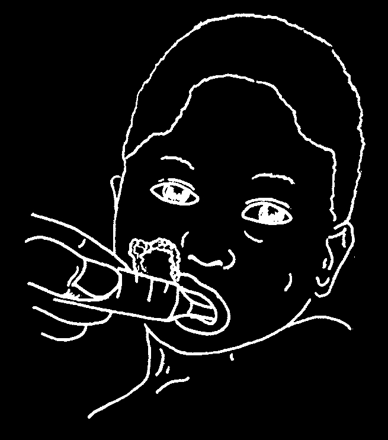
TREATMENT:
You must start treatment for Noma immediately in order to prevent the hole from getting bigger. The bigger the hole, the tighter the scar that forms after you close the hole. A tight scar will prevent the child from opening his mouth and chewing the food he needs to grow stronger.
1. Give fluids.
The child needs to overcome both the lack of body water (dehydration)
and his lack of resistance to disease.
Start giving the milk-oil drink described on p. 111.
If he cannot drink by himself, help him. Use a spoon or syringe.
Place the fluid on the inside of the healthy cheek and ask the child to swallow.
2. Treat the anemia.
Start giving iron (ferrous sulfate) now. The child should continue taking the tablets or mixture for 3 months, with food.
Ferrous Sulfate Tablets over 6 years
200 mg (1 tab) 3 times a day
3–6 years
100 mg (½ tab) 3 times a day under 3 years
50 mg (¼ tab) 3 times a day
You can also use ferrous fumarate. Advise the mother that the iron will make the child’s stool black.
Also give food rich in iron: meat, fish, eggs, dark green leafy vegetables, peas and beans.
Note: A child may have anemia because he has worms. It is a good idea to do a stool analysis to find out. If he has worms, give him medicine right away. Mebendazole, albendazole, and thiabendazole treat many different worm infections. Piperazine treats roundworm and pinworm infections, and there are other medicines for tapeworm and blood flukes. Also give folic acid. For doses, see Where There Is No
Doctor, pages 373 to 376, and page 392.
3. Start antibiotics.
Metronidazole is the best medicine to use. Give 200 mg by mouth 3 times a day for 10 days. You can also use clindamycin. To decide how much to give, weigh the child. For adults, see the medicines and doses on page
Weight
Dose for clindamycin (give 3 times a day for 5 days)
5 to 10 kg
50 mg by mouth or 60 mg by injection
10 to 17 kg
100 mg by mouth or 130 mg by injection
17 to 25 kg
150 mg by mouth or 225 mg by injection over 25 kg
250 mg by mouth or 333 mg by injection
4. Treat the other illness that helped Noma to develop.
It is wise to assume that the child has malaria and to begin treating with antimalarial drugs (see Where There Is No Doctor, pages 364 to 367).
Look for any other illnesses and treat them, too, especially measles and tuberculosis.
5. Clean the sore.
Gently pull away any dead skin with tweezers. Wash the inside of the sore with hydrogen peroxide. (Be sure you measure the hydrogen peroxide carefully. See page 8.) Then put in a wet dressing. (You can also clean the sore with an iodine solution.)
The dressing:
• Soak cotton gauze in salt water. Squeeze out the extra water so that it is damp but not wet.
• Put it in the hole and cover it with a dry bandage.
• Every day, remove the bandage, wash the hole with hydrogen peroxide, and put in a new dressing. Do this until the hole does not smell anymore and there is no more dark dead skin.
6. Remove the loose teeth and dead bone.
You can use a local anesthetic (Chapter 9). Usually there is not much bleeding. If gums are loose, join them with a suture (see pages 161 to
163).

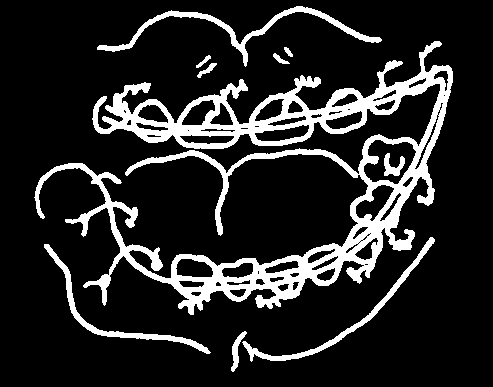
7. Keep the mouth clean.
• Use a soft brush gently to clean the remaining teeth. Do this 3 times a day for the child.
• Wipe the gums with a weak solution of hydrogen peroxide. Use cotton gauze that is damp with the solution. Do this every 2 hours for 5 days.
• Then after 5 days, start rinsing with warm salt water 3 cups a day.
8. Get advice on whether surgery is needed.
Unfortunately, the child will probably need surgery, to release the scar. Without this surgery, the child will not be able to open his mouth properly.
Send the child for medical help when the infection is finished and the wound starts to close.
You may also need a dentist’s help at this time. The child’s jaws may need to be wired. The wires are put on the healthy teeth in a way that holds the mouth open while the tight scar is forming. When the wires are removed, the child will be able to open and close his mouth to chew food.
PREVENTION Of NOMA:
Noma need not occur. We can prevent it. Always give special attention to the mouth of a sick child, to be sure to keep his teeth clean.
Whenever someone is nursing or caring for a sick child, that person should clean the child’s teeth as a normal activity. This is especially true for a child who is weak, undernourished, and with little body water
(dehydration).
Such a child should always:
• have his teeth carefully cleaned each day with a soft brush.
• rinse his mouth with a warm salt water solution (page 7), 2 times a day.
• eat fresh fruits and vegetables, especially the kind that have
Vitamin C: guavas, oranges, pineapples, papayas, tomatoes, peas, and dark green leaves.


TUMOR
A tumor is a lump that grows under the skin or inside the bone. It grows slowly but steadily, usually without any pain.
If the swelling does not get better after 5 days of antibiotics and heat treatment (page 94), it may be a tumor.
TREATMENT:
Do not waste any more medicine or any more time. A tumor may be cancer. Send for medical help. Surgery is needed to remove a tumor.
CANCER
Any sore or bump that does not heal within 2 weeks may be cancer.
The lips and tongue are the 2 places in the mouth where cancer starts most often. Also check the floor of the mouth under the tongue, the soft part of the roof of the mouth, and the gums.
Cancer is deadly.
Cancer can spread quickly to the inside of the person’s body where you cannot see it. This can lead to the person’s death. But cancer can be treated if you notice it early.
TREATMENT:
Whenever you treat a sore and it does not get better, send the person for medical help immediately. A doctor can cut out a piece from the sore, look at it under a microscope, and decide if it is cancer. If it is cancer, you will need specialized treatment.

CHAPTER 8
Scaling Teeth
Scaling means 'scraping away.’ You can scale old food, tartar, or even a fish bone caught under the gum. You usually scale teeth to remove tartar.
We get tartar when the coating of germs on our teeth (page 50)
becomes hard.
Gums that press against tartar become sore and infected.
Clean teeth keep our gums healthy. Scaling a person’s teeth gives infected gums a chance to become normal again.
However, gums remain healthy only when we keep the teeth beside them clean. If we are not careful about cleaning our teeth after they are scaled, tartar will soon return. Instead of being healthy, the gums will become sore and infected again.
Scale a person’s teeth, but also teach how to keep teeth clean.
You must remove something caught under the gums (page 133) before it causes more pain and swelling. Remove a piece of fish bone or piece of mango string now.
If the person has a mild gum problem (gums that bleed), wait a week or so before scaling. If the person uses this time to clean his teeth better and to rinse with warm salt water (page 7), the gums will improve. The person’s teeth will be easier for you to scale, and he will learn that he can do much by himself to care for the gums.
Use a mirror to show the person gum infection inside his own mouth.
Later he can see the improvement he has made. He can learn about how to keep gums healthy as he follows his own progress.
Scale a person’s teeth only when he really wants to try to keep them clean. If he does not want to clean his teeth, the tartar will soon return. Do not waste your time scaling the teeth of a person who does not want to learn.